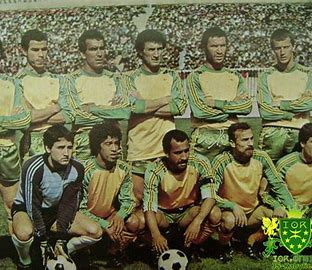

Depuis 1946, un club gravé dans le cœur de l'Algérie
Fondé à Tizi Ouzou sous le nom de JS Kabylie, rapidement devenu un symbole culturel et sportif.
Début d'une dynastie nationale, le club impose son style offensif.
Premier titre continental, victoire légendaire face à AS Vita Club. Deuxième sacre en 1990.
JSK ajoute une Coupe d'Afrique à son palmarès, devenant l'un des plus titrés du continent.
Record national avec 14 titres de champion, le club le plus titré du pays.

📸 Les Canaris à travers l'histoire